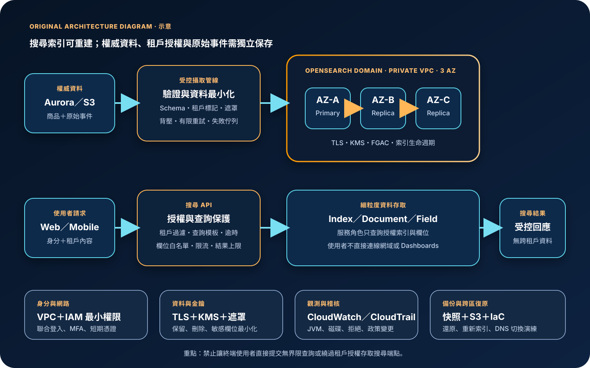

Amazon OpenSearch Service：搜尋、日誌分析與叢集治理
Amazon OpenSearch Service 是受管的搜尋與分析服務，可部署 OpenSearch 叢集或使用 OpenSearch Serverless，處理全文搜尋、應用程式可觀測資料、安全事件與近即時分析。它能代管基礎設施與部分維運工作，但不會自動修正不合理的索引模型、過寬的資料權限、無界限查詢、錯誤的分片規劃或不完整的資料保存與復原策略。
作者：Dr. William｜查閱與發布：2026-09-27
服務定位
Amazon OpenSearch Service 接收由應用、串流、資料管線或日誌代理送入的文件，建立可搜尋索引，並提供 REST API、OpenSearch Dashboards 與分析能力。典型用途包括網站與商品全文搜尋、集中式日誌分析、應用效能與營運事件探索，以及資安偵測資料的查詢與視覺化。
主要部署方式分為受管網域與OpenSearch Serverless。受管網域讓團隊選擇執行個體、儲存、專用叢集管理節點、分片、副本與多可用區配置；Serverless 以 collection 為管理單位，自動配置與擴縮搜尋及索引容量。Serverless 減少節點管理，不代表可忽略資料存取政策、加密政策、網路政策、索引設計、查詢成本與容量上限。
核心概念與適用邊界
搜尋與資料元件
- 文件與欄位：資料以 JSON 文件進入索引；欄位型別、分析器與 mapping 會直接影響搜尋結果、聚合能力及儲存量。
- 索引：索引是文件的邏輯集合；命名、版本、生命週期、寫入別名與保留期間必須預先設計。
- 主要分片：決定資料如何分散與平行處理；過少會形成容量瓶頸，過多會消耗記憶體與管理資源。
- 副本分片：提供讀取擴展與節點故障時的資料副本，但會增加儲存、寫入與同步成本。
- 分析器：將文字正規化與斷詞；語言、同義詞、停用詞與大小寫規則會影響召回率與精確度。
- Dashboards：提供搜尋、視覺化與操作介面；仍須受到身分、角色、租戶與網路邊界限制。
部署與責任邊界
- 受管網域：客戶控制節點、儲存、版本與拓撲；AWS 執行受管基礎設施維護，容量規劃仍屬客戶責任。
- Serverless：以 collection、加密、網路與資料存取政策治理，自動擴縮底層運算；查詢與索引效率仍影響使用量。
- VPC 存取：可將端點限制於 VPC；此時仍要正確設定安全群組、DNS、路由與來源工作負載。
- 細粒度存取控制：可限制 cluster、index、document、field 與 Dashboards 權限；不能只靠網域存取政策取代資料層授權。
- 近即時搜尋：文件寫入後通常需 refresh 才能被搜尋，不適合當作要求同步交易一致性的主資料庫。
- 快照：受管網域具有自動快照能力，也可使用手動快照；快照、應用設定與流量切換仍須定期還原演練。
適合與不適合的使用情境
適合
- 需要全文搜尋、相關性排序、模糊比對、欄位過濾、聚合與近即時索引。
- 需要集中查詢大量應用日誌、稽核事件、指標衍生資料或安全事件，並建立可視化儀表板。
- 資料來源有明確的權威系統，搜尋索引可由資料庫、物件儲存或串流重新建立。
- 團隊能管理 mapping、分片、索引生命週期、資料存取角色、查詢限制與容量監控。
- 工作負載變化大且希望減少節點管理時評估 Serverless；需要精細拓撲、版本與容量控制時評估受管網域。
不適合或不能單獨完成
- 要求每次讀取都具同步強一致、完整交易、跨多筆資料的嚴格約束，且無其他權威資料庫。
- 只需要低成本封存、很少查詢的原始日誌；此類資料可先存入 S3，再按需求建立查詢或索引層。
- 希望把未分類的所有資料與日誌無限期送入索引，卻沒有保留、刪除、遮罩與成本上限。
- 需要向網際網路匿名開放 Dashboards 或資料 API，且無法建立應用層驗證、WAF、速率限制與查詢邊界。
- 將 OpenSearch 當成資料備份，卻沒有權威來源、快照驗證、重建程序與跨區復原設計。
示意故事案例：多租戶電商搜尋與日誌分析
以下為示意案例，不代表特定企業或正式部署。 一個多租戶電商平台以 Aurora 保存商品與訂單的權威資料。商品變更事件進入受控資料管線，完成 schema 驗證、敏感欄位移除、租戶標記與失敗佇列處理後，寫入位於私有 VPC 的 OpenSearch 網域。搜尋 API 先驗證使用者與租戶，再以服務角色查詢對應索引別名；使用者不能直接連線到網域或 Dashboards。
網域跨三個可用區配置專用叢集管理節點、資料節點與副本分片，節點間及靜態資料使用 KMS 加密，傳輸使用 TLS。細粒度存取控制限制每個服務可查詢的索引與操作；管理者透過聯合登入、MFA 與短期憑證進入受控維運路徑。CloudWatch 監控 JVM 記憶體壓力、CPU、磁碟、叢集狀態、寫入拒絕、搜尋延遲與錯誤，CloudTrail 稽核管理 API。舊索引依保留政策移除，原始事件保存於 S3；快照、索引範本、資料管線與 DNS 切換程序在另一區域定期演練。

建置與運作流程
- 定義查詢目標：列出使用者搜尋、日誌探索、聚合、延遲、索引速度、資料新鮮度、保存期間與復原目標。
- 盤點權威來源：確認哪些資料可重新索引、原始事件保存位置、刪除來源、資料分類與法規保存要求。
- 選擇部署模式：依流量可預測性、拓撲控制、版本需求、操作能力與成本模型選擇受管網域或 Serverless collection。
- 設計 mapping：明確定義 keyword、text、numeric、date、object 與向量等欄位型別，禁止不受控動態欄位造成 mapping explosion。
- 設計索引生命週期：建立時間或業務分區、寫入別名、rollover、保留、刪除及必要的冷資料策略。
- 規劃分片：以資料量、節點數、寫入量、查詢併發與故障復原測試決定主要分片及副本，避免單一巨大分片或大量微小分片。
- 建立私有網路：將網域或 Serverless VPC endpoint 放在受控網路，安全群組只允許指定應用與維運來源。
- 建立身分邊界：管理平面使用 IAM 最小權限、聯合登入、MFA 與短期憑證；資料平面使用細粒度角色、索引、文件與欄位權限。
- 啟用加密：強制 HTTPS、節點間加密與靜態加密，依資料分類使用 KMS key，限制 key policy 與管理權限。
- 建置攝取管線：驗證 schema、移除或遮罩敏感欄位、加入租戶與資料來源標記、設定批次大小、重試、背壓與失敗佇列。
- 保護查詢：由應用 API 執行授權、租戶過濾、查詢模板、欄位白名單、分頁上限、逾時、速率限制與成本保護。
- 配置可用性：正式受管網域依需求採多可用區、專用叢集管理節點與足夠副本；驗證節點失效、藍綠變更與容量水位。
- 管理設定與機密：一般設定存入 Parameter Store；需要保存的連線秘密存入 Secrets Manager，不寫入程式碼、映像或一般日誌。
- 建立觀測：以 CloudWatch 監控叢集狀態、CPU、JVM、磁碟、分片、延遲、拒絕、錯誤與使用量，並集中保存適用日誌。
- 備份與復原：確認自動快照與手動快照需求，保留 IaC、索引範本與管線設定，演練還原、重建索引及跨區流量切換。
成本、可用性與維運考量
受管網域主要成本來自資料節點、專用叢集管理節點、EBS 儲存、UltraWarm 或冷資料、資料傳輸與快照儲存；Serverless 主要依索引與搜尋運算容量及儲存量計費。OpenSearch Ingestion、CloudWatch Logs、KMS、S3、跨區傳輸與其他整合服務可能另行計費。過多分片、高基數欄位、保存過久、深度分頁、前綴或萬用字元查詢、昂貴聚合及重複索引都會增加資源使用。
高可用設計需同時考慮資料節點、專用叢集管理節點、可用區、副本分片與應用重試。多可用區與副本能降低單一節點或可用區故障影響，但叢集在重新配置或分片重分配期間可能出現效能下降、寫入拒絕或查詢延遲。應用須使用有限退避、合理逾時、冪等寫入與降級查詢，不能對過載叢集無限制重試。
跨區復原不是只複製索引。復原計畫還須包含原始資料、攝取管線、IAM、KMS、VPC、DNS、應用設定、索引範本、Dashboards 物件與驗證程序。可依 RPO／RTO 選擇快照還原、由 S3 或資料庫重新索引，或採跨叢集複寫；任何方案都要測試 KMS 權限、版本相容性、容量與流量切換。
Amazon OpenSearch Service 特有資安風險與控制
- 資料端點或 Dashboards 暴露：優先使用 VPC 存取與受控維運入口；若業務必須使用公有端點，仍須使用強身分驗證、最小來源、WAF、速率限制與持續暴露檢查。
- 只做網域政策、不做資料授權：啟用細粒度存取控制，分離 cluster、index、document、field 與 Dashboards 權限；多租戶不得只依前端隱藏資料。
- 主使用者濫用：主使用者只用於初始設定與緊急復原，日常管理改用映射角色、聯合登入、MFA 與短期憑證。
- 跨租戶資料洩漏：在資料寫入與查詢兩側驗證租戶，採獨立索引或嚴格 document-level security，測試別名、Dashboards tenant、匯出與快取邊界。
- 敏感資料進入索引：攝取前分類、遮罩與最小化個資、驗證資料及秘密；原始請求、查詢字串、錯誤與 slow log 不得洩漏敏感內容。
- mapping explosion：使用明確 mapping、欄位白名單與動態範本，限制由使用者控制的任意欄位名稱，對欄位數與拒絕事件告警。
- 資源耗盡與拒絕服務：限制查詢語法、聚合桶數、結果窗口、逾時、併發與請求大小；監控 rejected tasks、JVM、CPU、磁碟與單租戶流量。
- 惡意或昂貴查詢：禁止未受控 script、regex、leading wildcard 與深度分頁，使用查詢模板及欄位白名單，對匿名與低信任流量加上 WAF 與速率限制。
- 加密設定被弱化：強制 HTTPS、節點間加密與靜態加密；以 KMS 保護資料與快照，限制 key policy，並對停用、排程刪除與政策變更告警。
- 管理與稽核缺口：以 CloudTrail 集中保存建立、修改、刪除與存取政策等管理 API；啟用適用的稽核日誌並防止一般管理者任意刪除。
- 快照無法還原：定期在隔離環境驗證快照、版本、角色、KMS 與 repository 權限；原始資料與 IaC 亦須可重新建立索引。
- 刪除請求未傳播：把個資刪除、租戶終止與資料保留規則同步到索引、快照、原始事件及下游匯出，留下可稽核的執行紀錄。
共同責任邊界
AWS 負責 OpenSearch Service 受管基礎設施、實體設施、硬體與服務平台安全，並依部署模式提供節點維護、自動擴縮、快照、加密及可用性能力。客戶負責資料分類、mapping、索引生命週期、分片與容量、VPC、安全群組、存取政策、細粒度角色、KMS、查詢限制、原始資料、成本與復原。
客戶仍須落實 IAM 最小權限、管理者 MFA 與短期憑證、網路隔離與公開存取盤點、KMS 加密、Secrets Manager／Parameter Store、CloudTrail／CloudWatch、備份及跨區復原。AWS 不會替應用判斷文件屬於哪個租戶、哪些欄位可被搜尋、查詢是否過度昂貴、索引是否應刪除，亦不保證錯誤 mapping 或無界限攝取不會耗盡資源。
上線前可執行檢查清單
- □ 已記錄搜尋與分析目標、p95／p99 延遲、資料新鮮度、索引量、查詢併發、RPO／RTO 與成本上限。
- □ 每個索引都有權威來源、資料擁有者、分類、租戶邊界、保留期限、刪除與重新索引程序。
- □ 受管網域或 Serverless 已依拓撲控制、版本、流量、維運能力與計費模型測試選定。
- □ mapping、分析器、動態範本與欄位上限已經版本控制，未允許不受控任意欄位。
- □ 分片與副本數已依資料量、節點、寫入、查詢與故障測試設定，沒有大量微小分片或超大分片。
- □ 網域、collection 與 Dashboards 位於受控網路；公開端點、0.0.0.0/0 與不必要跨網路路徑均已移除。
- □ 管理者使用聯合登入、MFA 與短期憑證；建立、修改、刪除、政策變更及 iam:PassRole 權限已縮限。
- □ 細粒度存取控制已限制 cluster、index、document、field、Dashboards tenant 與管理操作。
- □ 多租戶授權已在寫入、搜尋、匯出、Dashboards 與錯誤路徑測試，無法跨租戶查詢或推測資料。
- □ 任何 credential、Access Key、Secret Key、Token、密碼或 cookie 都未寫入索引、查詢、URL、原始碼、映像或一般日誌。
- □ 機密存於 Secrets Manager，非秘密設定存於 Parameter Store，兩者均有最小權限、輪替與稽核。
- □ HTTPS、節點間加密與靜態加密已啟用；KMS key policy、停用、刪除、快照與還原權限已測試。
- □ 攝取管線具 schema 驗證、敏感欄位遮罩、批次上限、背壓、有限重試、失敗佇列與可重送識別。
- □ 搜尋 API 使用查詢模板、欄位白名單、結果上限、逾時、速率限制與昂貴查詢防護。
- □ 正式網域已依需求配置多可用區、專用叢集管理節點、副本與足夠磁碟水位。
- □ CloudWatch 已監控叢集狀態、CPU、JVM、磁碟、分片、索引與搜尋延遲、拒絕、錯誤及成本。
- □ CloudTrail 已集中保存 OpenSearch 管理 API，存取政策、網路、加密、KMS、刪除與版本變更已告警。
- □ slow log、application log 與 audit log 已依適用性啟用，保存位置不可由一般網域管理者任意刪除。
- □ 已估算節點或 Serverless 運算、儲存、溫冷資料、攝取、日誌、快照、KMS 與資料傳輸成本。
- □ 已演練節點與可用區失效、磁碟壓力、mapping explosion、昂貴查詢、資料刪除、快照還原、重新索引與跨區切換。
AWS 官方一手來源
- What is Amazon OpenSearch Service?（查閱：2026-09-27）
- What is Amazon OpenSearch Serverless?（查閱：2026-09-27）
- Operational best practices for Amazon OpenSearch Service（查閱：2026-09-27）
- Launching OpenSearch Service domains within a VPC（查閱：2026-09-27）
- Fine-grained access control in Amazon OpenSearch Service（查閱：2026-09-27）
- Encryption of data at rest for Amazon OpenSearch Service（查閱：2026-09-27）
- Node-to-node encryption in Amazon OpenSearch Service（查閱：2026-09-27）
- Multi-AZ with Standby（查閱：2026-09-27）
- Creating index snapshots in Amazon OpenSearch Service（查閱：2026-09-27）
- Monitoring OpenSearch cluster metrics with Amazon CloudWatch（查閱：2026-09-27）
- Logging Amazon OpenSearch Service API calls with AWS CloudTrail（查閱：2026-09-27）
- Security in Amazon OpenSearch Service（查閱：2026-09-27）
- Amazon OpenSearch Service pricing（查閱：2026-09-27）
- AWS Well-Architected Security Pillar｜Shared responsibility（查閱：2026-09-27）
內容說明
本文依查閱日可用的 AWS 官方文件整理，作為基礎學習與架構討論材料；實際部署仍須依最新功能、OpenSearch 版本、區域支援、價格、配額、資料分類、組織政策及復原演練結果調整。